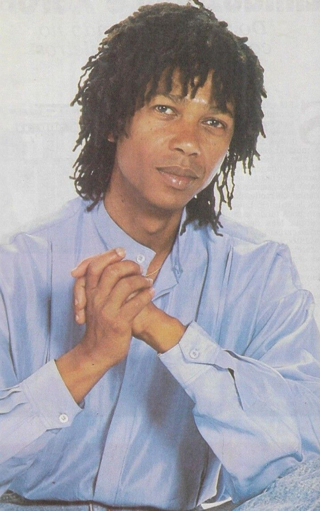
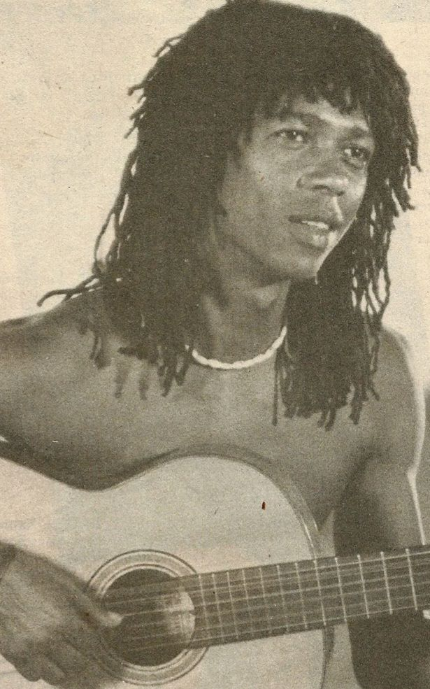
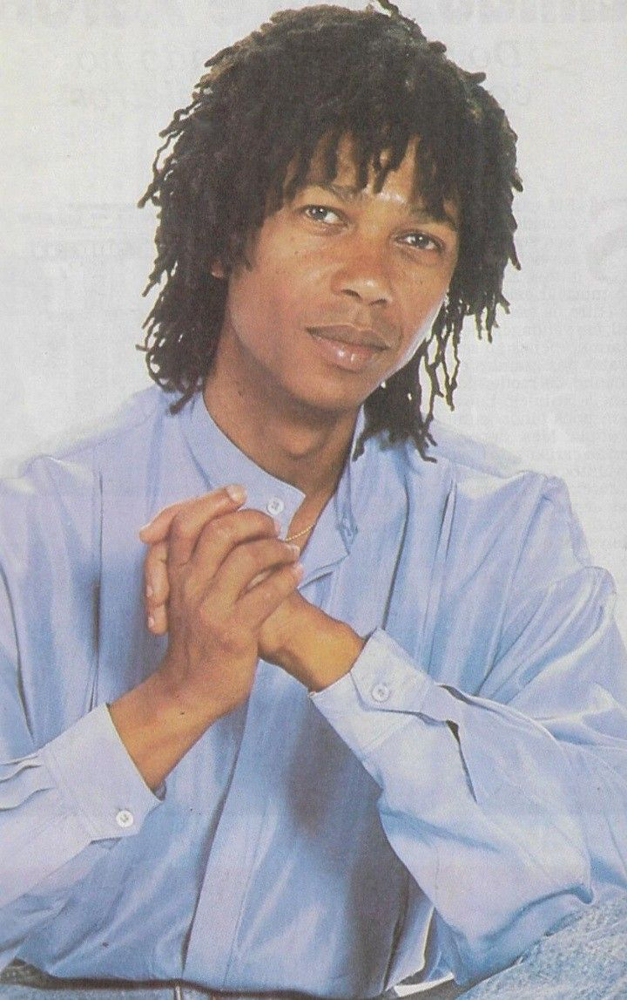
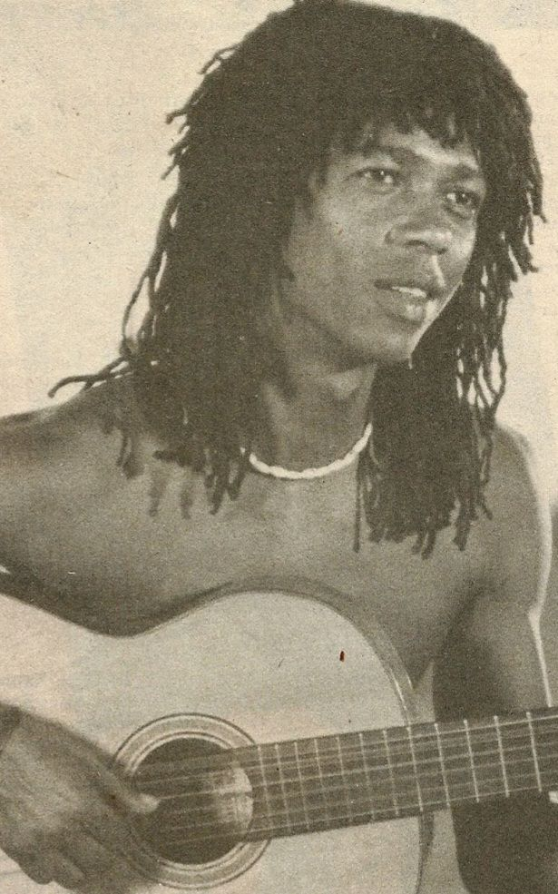

Biografia
Djavan, nascido José Djavan Costa Pereira em 27 de janeiro de 1949, em Maceió, Alagoas, é um dos maiores e mais respeitados artistas da música brasileira. Com uma carreira que abrange mais de 40 anos, Djavan é conhecido por sua habilidade única de mesclar ritmos tradicionais da música brasileira, como samba e bossa nova, com influências do jazz, pop e música internacional. Sua música é marcada por letras poéticas e sofisticadas, além de um estilo vocal inconfundível, com um timbre suave e encantador.
Entre seus maiores sucessos estão canções como "Oceano", "Lilás", "Flor de Lis", "Se", "Sina", "Samurai", "Eu Te Devoro" e "Pétala", que são amadas tanto por sua musicalidade quanto pela profundidade das letras. As músicas de Djavan são marcadas por letras poéticas e intimistas, que exploram temas como o amor, as relações humanas e a natureza, sempre com uma sensibilidade única.
Além de sua carreira solo, Djavan colaborou com outros grandes artistas da música brasileira, como Gilberto Gil, Caetano Veloso, Elis Regina, Milton Nascimento, e outros, além de se apresentar em vários palcos internacionais. Seu talento também foi reconhecido em prêmios como o Grammy Latino, que ele ganhou por seu trabalho.
 


